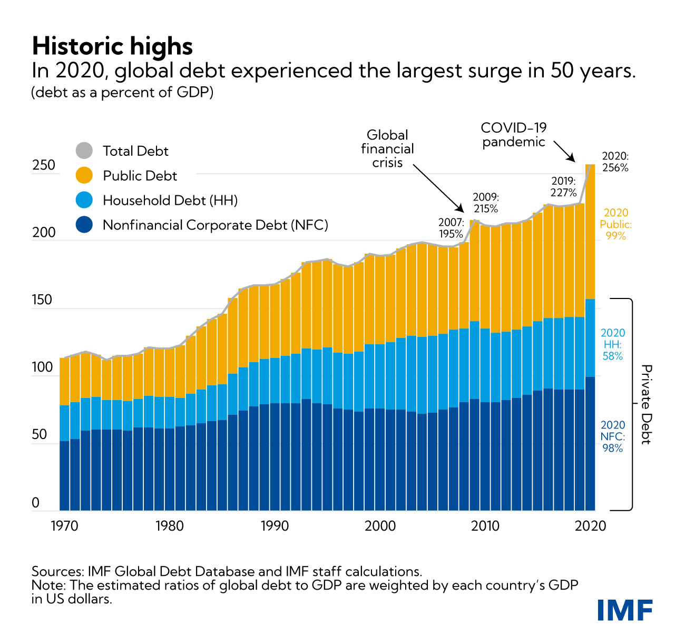

Geographical distribution of debts through World Bank to various countries.
Data Analysis of World Bank data about 124 countries that took debt from the latter, how much is it and its effect among them.
Description
Technologies used: Windows, PostgreSQL, Jupyter, Python
Utilized Python scripts and SQL queries to gather and scrape comprehensive international debt data from various
authoritative sources for 124 countries (representing over 90% of the global population), ensuring a robust and
reliable dataset for analysis.
Performed thorough data cleaning and preprocessing techniques, leveraging PostgreSQL and Python, to handle
missing values (reducing null entries by 85%), outliers, and inconsistencies, enabling accurate analysis and
insightful conclusions from the debt indicators dataset.
Implemented advanced data visualization techniques using Python libraries like Matplotlib and Seaborn to
create informative charts, graphs, and interactive dashboards, effectively communicating key findings and trends
related to international debt, interest payments (accounting for 60% of total debt), and principal repayments
across different countries and indicators.

Read more
The project is available on GitHub online.
The source code of the project are of course available on the same as well.